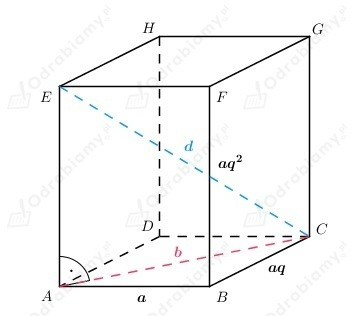

Z treści zadania wiemy, że
Należy zbadać monotoniczność ciągu:
Wyznaczamy wartość różnicy:
Zatem wnioskujemy, że ciąg (an) jest rosnący.
Z treści zadania wiemy, że ciąg określony rekurencyjnie ma wzór:
Badamy monotoniczność tego ciągu:
Wnioskujemy, że podany ciąg jest ciągiem rosnącym, zatem jest monotoniczny,
co należało wykazać.
Z treści zadania wiemy, że ciąg (an) jest skończonym ciągiem geometrycznym, gdzie:
Należy wyznaczyć liczbę wyrazów, z których składa się ten ciąg.
Korzystamy ze wzoru na sumę n początkowych wyrazów w
ciągu geometrycznym i dostajemy równanie:
Wnioskujemy, że ciąg składa się z czterech wyrazów.
Z treści zadania wiemy, że obwód trójkąta prostokątnego wynosi: 24.
Wiemy również, że długości jego boków tworzą ciąg arytmetyczny.
Możemy zapisać, że długości boków trójkąta, to:
Skoro jest to trójkąt prostokątny, to możemy zapisać jedno równanie wykorzystując
twierdzenie Pitagorasa, a drugie korzystając z informacji dotyczącej obwodu trójkąta.
Dostajemy układ równań:
Rozwiązujemy powyższy układ równań.
Podstawiamy wartość r do pierwszego równania i otrzymujemy:
Wracamy do podstawienia i wyznaczamy wartość r.
Wnioskujemy, że:
Zatem boki trójkąta mają długości:
Z treści zadania wiemy, że suma trzech liczb tworzących ciąg arytmetyczny jest równa 12:
Natomiast suma ich kwadratów jest równa 56:
Należy wyznaczyć liczby tworzące ciąg arytmetyczny.
Z pierwszego równania odstajemy:
Podstawiając powyższa wartość r do drugiego równania otrzymujemy:
Wracamy do podstawienia i wyznaczamy wartość r:
Zatem:
Wnioskujemy, że kolejne wyrazy ciągu arytmetycznego, to:
Przyjmijmy oznaczenia jak na rysunku poniżej:

Wiemy, że
Należy wyznaczyć pole powierzchni całkowitej prostopadłościanu, czyli:
Wyznaczamy a z równania:
Wyznaczamy długość przekątnej podstawy tego graniastosłupa korzystając z twierdzenia Pitagorasa:
Zatem korzystając z twierdzenia Pitagorasa dla trójkąta ACE dostajemy:
Podstawiamy wyznaczoną wcześniej wartość a:
Zastosujemy podstawienie:
Wtedy dostajemy równanie:
Wracamy do podstawienia i wyznaczamy wartość q:
Wobec tego:
Dostajemy:
Wyznaczamy pole powierzchni całkowitej prostopadłościanu:
Odp: Pole powierzchni całkowitej prostopadłościanu wynosi: 112 cm2.
Z treści zadania wiemy, że ciąg (an) jest rosnącym ciągiem arytmetycznym, gdzie:
Należy rozwiązać nierówność:
Zatem wyznaczamy wartość pierwszego wyrazu ciągu oraz jego różnicę:
Podstawiamy wartość pierwszego wyrazu do drugiego równania i otrzymujemy:
Wracamy do podstawienia i dostajemy:
Zatem:
Rozwiązujemy nierówność:
Rozwiązujemy równanie:
Rozwiązaniem nierówności jest suma przedziałów:
Uwzględniając założenie, wnioskujemy, że:
Zatem należy dodać co najmniej 8 początkowych wyrazów ciągu, aby otrzymać
sumę większą od 100.
Z treści zadania wiemy, że ciąg (an) jest monotonicznym ciągiem geometrycznym, gdzie:
Należy wyznaczyć wartość czwartego wyrazu ciągu, czyli:
Zauważamy, że:
Zatem podstawiamy wartość sumy do równania:
i wyznaczamy wartość trzeciego wyrazu ciągu:
Zatem:
Skoro ciąg jest geometryczny, to powyższe równanie możemy zapisać w postaci:
oraz
Rozwiązujemy układ równań:
Dzielimy stronami drugie równanie przez pierwsze i otrzymujemy:
Wyznaczamy wartość pierwszego wyrazu z drugiego równania:
Otrzymujemy:
Wyznaczamy wartość czwartego wyrazu ciągu geometrycznego: